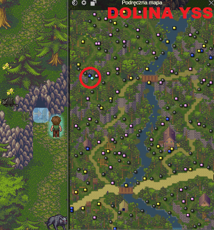

23lvl
Skorzystaj z mapki i udaj się do miasta Karka-Han.
Wykup tp w zakonie astralnym i weź misję z zakonu równowagi.
Następnie ponownie skorzystaj z mapki i udaj się do miasta Werbin.
Rozmawiamy z zarządcą w Werbin.
Następnie porozmawiaj z Rozalią, jest tuż pod nim
Udaj się do Zakonu Planu Astralnego w Werbin. Weź od niego misję.
Używamy teleportu do Viktora, bądź biegniemy do Ithan. Jeśli użyjemy tp do viktora, będzie sporo bliżej.
Gadamy z Linardem
Idź do Ithan, do zakonu planu astralnego.
Zostaniesz przeteleportowany do Werbin. Udaj się do tamtejszego zakonu planu astralnego, oddaj misję i wróć do Ithan.
Udaj się z Ithan do Doliny Yss.

Wchodzimy i rozmawiamy z żywiołakiem ziemi na końcu.
Wychodzimy i udajemy się do Ithan, z Ithan do Zniszczonego Opactwa, Uroczysko, Wichrowe szczyty
Następnie wracamy do Ithan, Do doliny yss, idziemy do żywiołaka wody
Wróć do Ithan. Uzupełnij poty u uzdrowicielki. Następnie teleportuj się do Karka-han.
Zejdź dwie mapki w dół do przełęczy dwóch koron. Wejdź do piekielnej groty.
od piekielnej groty p3 sala 1, zabijaj potworki do misji zakon rownowagi lvl 23!
Po skończeniu obu questów, udajemy się do karka-han, oddajemy zakon równowagi i tepamy do Ithan
Idziemy do Linarda w dolinie Yss, który powie nam, gdzie zdobyć broń, którą nam ulepszy.
Zdobądź broń (Większośc profesji może po prostu gdzieś kupić) i wróć do Linarda.
Juhu! Nasza pierwsza unikatowa broń.
Udajemy się do zakonu równowagi w Ithan po quest na mrówki. Po drodze, sprzedajcie u Roana syf. Nie potrzebujecie też dużo potek bo lotają z mrówek.
Idziemy do Leśnego brodu, tutaj.
Doleczajcie się zawsze do pełna przed grupami z mrówkami żołnierzami. Zatruwają was w walce, a trucizna co turę robi b. dużo obrażeń.
Farmcie mrówki do 25 lvlu i skończcie questa. One dropią dobre poty i dobry syf na kasę.
25 lvl